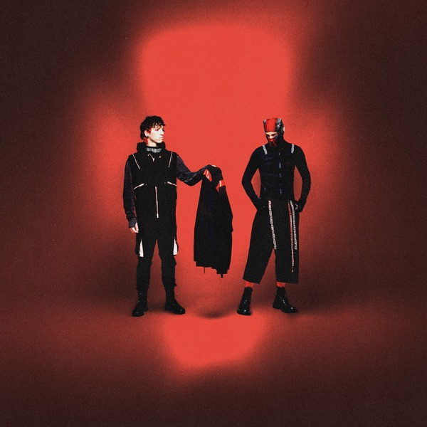

Breach
Twenty One Pilots
Upgrade idea: This is a first pressing of a 2025 release — no upgrade path exists. The Sterling Sound master and Canadian pressing are current best practice. The retail red vinyl is a distinct variant from the European black pressing.
Production notes
Tracklist (Discogs)
| A1 | City Walls | |
| A2 | Rawfear | |
| A3 | Drum Show | |
| A4 | Garbage | |
| A5 | The Contract | |
| A6 | Downstairs | |
| B1 | Robot Voices | |
| B2 | Center Mass | |
| B3 | Cottonwood | |
| B4 | One Way | |
| B5 | Days Lie Dormant | |
| B6 | Tally | |
| B7 | Intentions |
Tracklist (Apple Music)
| 1 | City Walls | 5:22 |
| 2 | RAWFEAR | 3:22 |
| 3 | Drum Show | 3:23 |
| 4 | Garbage | 3:16 |
| 5 | The Contract | 3:45 |
| 6 | Downstairs | 5:26 |
| 7 | Robot Voices | 3:57 |
| 8 | Center Mass | 3:48 |
| 9 | Cottonwood | 3:08 |
| 10 | One Way | 2:43 |
| 11 | Days Lie Dormant | 3:26 |
| 12 | Tally | 3:32 |
| 13 | Intentions | 2:15 |
Identifiers
- Barcode: 075678594526
Notes
Hype sticker reads: RETAIL RED
Made in Canada
Different from the [url=https://www.discogs.com/release/35068217-Twenty-One-Pilots-Breach]Europe Release[/url]
Breach is Twenty One Pilots’ eighth studio album, released in 2025 on Fueled by Ramen / Warner Music Group, following the conclusion of the Clancy narrative arc on their previous album. The duo — Tyler Joseph and Josh Dun — continue their evolution as arena-scale alternative artists, with Breach representing a new chapter in their catalog freed from the overarching fictional mythology that defined the Trench / Clancy era. Mixed at Periscope Sound in Franklin, Tennessee; mastered at Sterling Sound, New York.
This 2025 USA & Canada pressing is the retail red vinyl edition — hype sticker reads “RETAIL RED” — distinguishing it from the standard European black vinyl pressing. Made in Canada. The deadwax
304725E1/Aconfirms the Sterling Sound lacquer; the pressing plant is consistent with Canadian manufacturing facilities used for Fueled by Ramen / WMG releases.About this 2025 USA & Canada pressing (Vinyl, LP): Fueled by Ramen catalog 075678594526, 2025 first pressing. Red vinyl. Made in Canada. Mastered at Sterling Sound. Barcode 075678594526. Matrix 304725E1/A 02312849.